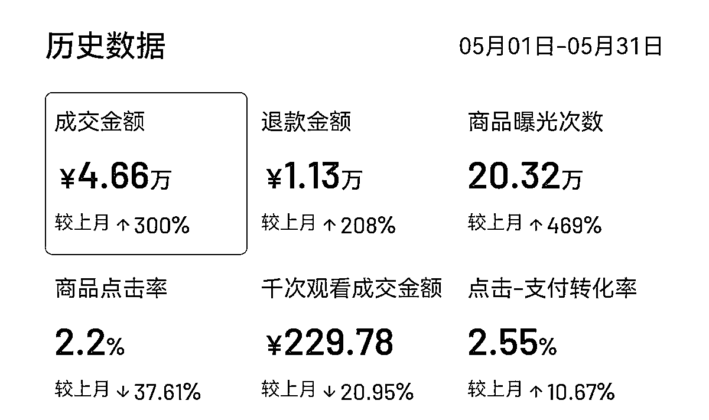
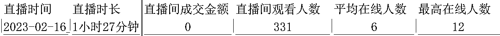
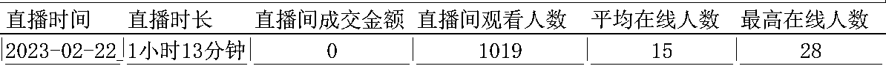
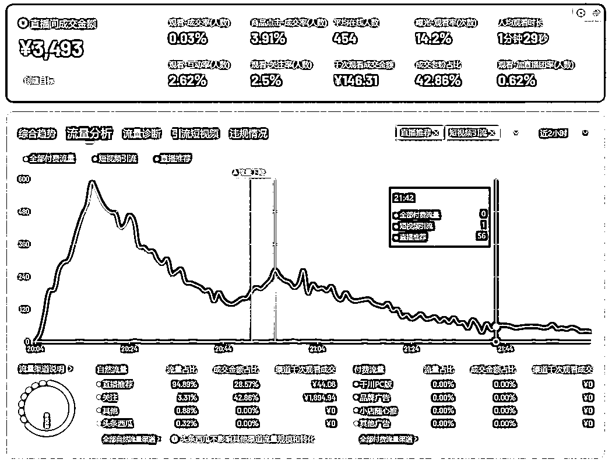

来源：https://v0ehdmsi4r1.feishu.cn/docx/TcITdfeBLoV6kZxhaSvc6mw1nBh
大家好，我是大倪，一个靠抖音知识付费，1个人接近0投入，3个月做到月入6w+的四线城市宝妈，目前抖音直播稳定2-4w场观，每月稳定变现5-7w，依然在抖音知识付费领域深耕。
前几天读到亦仁哥说的：所有生意都值得拿到抖音再做一遍，深以为然。
我是做应届生求职辅导的，最近在抖音上拿到了结果，这篇帖子是分享也是总结，我会把我变现的过程和做抖音的心得无条件地分享给各位生财圈友，也刚好是对最近工作的一个总结，希望对大家有所启发。
开头先浅晒一下抖音直播的收入，其他的收入我在后面会详细讲~

4年前，因为爱情从天津来到遥远的哈尔滨，进入某上市公司成了一名新媒体运营。小城市节奏慢，工作轻松，每天下班就是追剧打游戏，那时老公的收入还不错，我的梦想也只有一个：当个富太太。
但后来，老公的收入下降，我的工作也岌岌可危，为了给自己准备一条后路，在2021年初，我开始尝试做短视频，卖货、拍vlog、做情感博主、做美食博主……一通尝试，最后发现全是弯路。
偶然间，因为1条视频爆火，我的抖音突然涨了5w粉丝，我开始集中拍摄大学生学习成长相关的视频，但运营了2年，总共变现了1w。
因为变现效果差，我也没好好运营，怀孕停更，生孩子停更，照顾小孩太累停更，心情不好停更，2年的时间，我更新的视频加起来不超过100条。
2023年2月，我终于把小孩养到了1岁，当妈的复杂心情也渐渐平复，我的注意力从生活转移到事业上，我开始思考：如何把抖音做起来？
优势是：我有一个11w粉丝的账号。
但劣势却更明显：
我的账号看起来粉丝很多，但基本都是2年前的粉丝了；
我的粉丝黏性很差，一发广告视频根本就没有播放；
更残酷的事实是现在依靠短视频挂车卖课已经没有可能了，想卖课只能走一条路，就是直播。
分析来分析去，做别的项目我毫无优势，但做抖音，不管活粉死粉，最起码有11w粉丝在那摆着，多少有点优势，不管结果如何，先干着再说！
准备直播脚本，买各种直播设备，安排好娃……我开始风风火火地筹备第1场直播。
开播前，我极度乐观：11w粉丝博主开播，怎么着直播间也得有几十个人吧，总不至于太惨！
但开播后，现实却啪啪打脸，来吧，放个数据，看看我刚直播时有多惨：

你能想象吗？一个11w粉丝的账号，直播间平均在线6个人，这里面有一个我的小号，还有一个我老公，我爸我妈我婆婆也经常过来支持支持，这数据基本可以约等于没人。
不过，即使直播的情况这么惨，我还是坚持直播了一周，一周之后稍微有了点起色，但不多。

一周的时间，每天晚上下了班唾沫横飞地讲一两个小时，晓之以情地劝，动之以理地讲，一共就卖了2节，其中有一节还是我婆婆心疼我讲得太累买的。
挫败！焦虑！怎么办？怎么把直播间的人气搞上去？
刚开始试水抖音直播，运营账号纯靠感觉：我感觉我这么说能出单，我感觉我讲到这的时候有人气，我感觉……感觉了一大堆，每天改来改去的，充分证明了一件事：感觉真他么不靠谱。
逐渐恢复理智的我，终于开始走正统的学习之路：买课！学习！我自己搞不懂，求教大神吧！
买了一堆课，一通学，陆续花了小1万，我发现自己以前都是瞎搞，原来只要做好5个数据，直播间不愁人气。截至5月底，我的直播间已经做到最高千人在线，最少2万场观。
这里放一下我这几个月的收入数据：
3月卖课收入2732元
4月卖课收入11894元
5月卖课收入42800元，私教收入18000元
我一个人，无团队，兼职干，从2月16日开始第一次直播，到月入破6w，只用了不到3个月。
呲呲呲，知识博主抖音变现yyds！
抖音日活7亿，视频号日活5亿，快手日活3.7亿，小红书日活1亿。目前主流的短视频平台，抖音依然是不可挑战的老大哥，堪称流量王者。
另外，各平台针对知识付费创作者的基础建设，抖音的使用感受相对快手、小红书、视频号依然是碾压级别。
我1个人用3个月做到月入6w+，看似取得的成绩还不错，但在抖音上依然有更多强者，我关注的知识付费博主里面，1个人可以做到月入50w+，只需3个人的小团队即可做到月入200w+，抖音变现无上限。
很多圈友一想到做抖音就是发短视频涨粉再直播变现，常规的路子在2023年不一定行得通，即使行得通也会非常慢：
第一，2023年的短视频卷的很，想要靠短视频出圈已经非常难了；
第二，2023年通过短视频卖课的效果已经非常差了，据我观察，目前只有2类人还可以通过短视频来卖课：
第1类：你服务的是B端客户，付费意识非常好，看过短视频就愿意主动付费
第2类：你服务的是C端客户，你卖的是100块钱以下的低价课
2021年和2022年，依靠短视频卖课还是有可能变现的，但2023年想要卖课，尤其是客单价超过100元，目标群体是C端用户，只有一条路可走，就是直播！
我曾经看过一个非官方数据：在知识付费领域，90%以上的钱都是通过直播成交的，短视频成交的仅占10%！
任何一个平台都是这样，刚起来的时候是红利期，不管发什么用户都容易付费，但越往后发展，用户见过的套路越多，心智越成熟，越难产生信任，越难付费。
对于抖音来说，通过短视频就能快速获取信任的时代已经过去，短视频核心的作用是立人设，直播才能快速培养信任，推动用户付费。
虽然现在直播也开始卷起来了，但毕竟门槛高，再有一年红利期不成问题。
直播间的自然流量主要有3个来源，关注、短视频推荐和直播推荐。
当你直播时，关注你的用户在关注页看到你正在直播，这种观看来源就是【关注】
用户在推荐页刷到你的视频，通过头像的直播呼吸灯点进直播间，这种观看来源就是【短视频推荐】。
新号开播【关注】和【短视频推荐】是主要流量来源。
当你直播时，抖音还会把你的直播间推荐给一部分人，他们也有可能点进直播间，这种观看来源就是【直播推荐】。【直播推荐】主要取决于你的直播间数据，新号开播直播推荐非常少，但只要直播间跑起来，直播推荐才是最主要的流量来源。
给大家看一下我目前的直播间人气来源，95%都是直播推荐，仅有3%来自关注，所以大家要知道账号有没有基础粉丝和基础短视频播放对于直播间起号的影响不大。

现在抖音上也有很多博主可以0粉直接起直播间，就是把直播间的数据做的特别好，包括还有一些我关注的博主，几个月不发作品，只是每天直播，直播间成交也非常好。
短视频和直播的关系，你可以这样理解：短视频和直播是完全不同的2条赛道，他们可以各火各的。目前的抖音直播，就像之前的抖音短视频一样，尚处于红利期，直播起号比短视频起号要简单的多。
所以，2023年，千万不要用以前的固化思维来做抖音：我先拍短视频积累粉丝，等有粉丝了再开播。错！错！错！
刚刚讲了直播间的流量来源，90%以上都是通过直播推荐，可直播间的数据那么多，哪些是平台考核的关键数据呢？
用户刷到你的直播间，第一眼看到的是直播画面，而知识博主的直播间不像卖货直播间，一眼可以看出来是在卖衣服或卖鞋子，知识博主就是一个老师坐在那里讲干货。
想要提高知识博主的曝光进入率，关键在直播背景和直播贴片。
背景如何设计？我买了个窗帘，买了2个直播间的灯，买了点装饰，一共花了736元，用自己家里的手机和台式电脑打造了一个质感直播间。
再换一下直播贴片，直播平均在线从个位数直接升到90。
放张对比图感受一下直播画面前后的差距
想要提高观看-关注率，光靠口播：没点关注给老师点上一个免费的关注，是不行的。
粉丝为什么要给你点关注，要给出关注的理由，我的经验是每次讲完一个知识点，讲得还不错，要一波关注，加关注的效果会非常好。
关于观看-互动率，很多人有一个误区：认为只要公屏上的评论多，就是互动多，但其实不然。
这里看的是直播间互动人数，而不是次数，一个粉丝不管跟你互动多少次，都只算一个人，它不会让你的观看-互动率提升，所以想要这个数据好看，就要尽量多的粉丝来跟你互动。
我常用的两个方法：1发福袋，2多问问题，可以明显提高观看-互动率。
粉丝为什么要加你的粉丝团，2个关键点：1你讲的好，未来还想继续听；2加了有福利。
所以，我在直播间会给粉丝团成员发一个免费的资料包，然后让粉丝团成员进主页粉丝群去领，这样既增加了加团率，又成功引流到私域去慢慢转化。
所有的平台都是要赚钱的，直播间有好的停留互动数据，也要有好的电商数据，平台才会给推更大的流量。
如何来提升电商数据呢？关键在节奏和话术。
好的节奏是
讲干货获取信任：对对对，老师讲的好老师讲的对
讲痛点放大焦虑：怎么办怎么办，老师说的好像就是我
讲课程塑造价值：妈呀！这么厉害这么超值，买买买！
好的话术是
破冰话术+自我介绍话术+互动话术+营销话术，用不断优化的标准话术，来征服直播间的核心用户。
搞定节奏和话术，直播间出单不难！
我刚开始做了2年抖音，除了涨了点粉丝外毫无变现，其中一个原因就是不舍得花钱，总以为别人都是在割韭菜，也听一些人说做好抖音完全不需要付费，秉承着不花钱的原则，我一直在自己瞎琢磨，进度龟速。
而这几个月，我从月入为0到月入6w+，我还是以前的我，进步神速主要归功于我一直在付费学习，陆陆续续花了小1万，自己琢磨几个月想不透的事情，老师一句话就点透了，跟前辈学习，让我少走了很多弯路。
最近加入生财，生财圈友真是卧虎藏龙，@宋老师的私域卖课帖子对我启发也很大，马上把私域这块优化起来。
等有粉丝了再变现，等短视频火了再直播，之前的我一直存在这种观念，但等着等着，2年过去了，以前我不看好的一些小博主都做起来了，我还是什么都没有准备好。
最近这几个月，我不去想我还有哪些没有准备好，想到什么立刻去做，之后再慢慢完善。虽然我现在仍然有很多地方不完美，但迅速开始的我已经超过了很多人，这让我在自媒体这个领域能快速取得还不错的成绩。
我，一个人，无团队，兼职做，接近0投入，每周开播10小时，3个月做到月入6w+，有一些伙伴觉得我做的成绩还不错，但我深知，我还远远没有够到抖音直播变现的天花板。
我自己还有提升的空间：
我晚上八点开播，这是流量竞争最激烈的时间点；
我每周直播10小时，远远没有达到行业的平均线；
我离那些单月卖课百万的大佬还有很远。
我的前面还有很多样板：
我对标的主播也是一个人，无团队，可以做到月入50w
有团队的主播，不过是3个人的小团队，可以做到月入200w
抖音知识付费变现没有天花板，我会继续深耕，先定个小目标：争取月入10万！
文毕，感谢我的良师益友，芷蓝姐和理白，让我有清晰的变现思路，有成熟的变现体系可以照搬，我没走弯路，快速拿到正反馈，坚定抖音知识付费变现之路。
最后，遥祝各位生财圈友，生财有术，一路向“钱”。